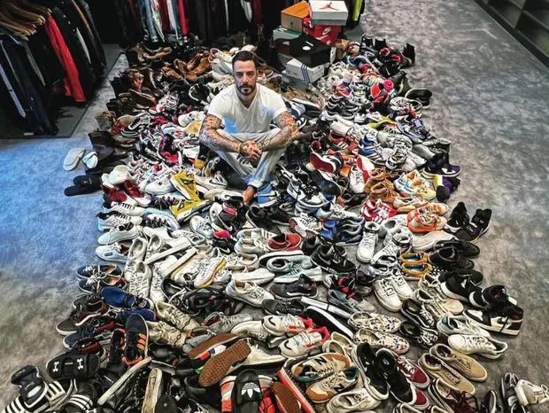

O que são sneakersheads?
Sneakerhead é o nome dado aos seguidores da cultura urbana do sneaker, ou seja, aqueles que apreciam calçar o bom e velho tênis – mas já adiantamos que não se trata de qualquer tipo de sapato.
Um ótimo exemplo são os calçados utilizados por personalidades midiáticase, principalmente, por indivíduos que mantêm o hype de um determinado estilo. Ficaram curiosos? Então, este conteúdo é exatamente para você! Venha desvendar tudo que rodeia essa cultura incrível!
Quando começaram a ser produzidos, eles eram destinados aos atletas de basquete e tênis de quadra. Mas, pela exposição e estilo, passaram a ser o sonho de consumo dos espectadores. O maior símbolo da cultura são os Air Jordans. Com certeza, vocês conhecem uma pessoa que é aficionada por ele e não mede esforços para conseguir um modelo exclusivo.
Essa é uma característica dos sneakerheads, eles correm atrás de modelos com pouquíssimas tiragens. Obviamente, acabam saindo bem mais caros que o normal, porém quanto vocês pagariam para usar o mesmo tênis que Michael Jordan?
Artistas famosos que aderem a esse estilo de vida
-
Marcos Mion
Muito estilo e luxo: Marcos Mion tem coleção incrível de tênis de deixar qualquer um de queixo caído. Apresentador brasileiro sempre deixou bem claro para quem o acompanha, sua paixão pelos sneakers! Fazendo até mesmo um perfil no instagram dedicado somente a esse universo.
-
Mark "Mayor" Farese
Conheça Mark “Mayor” Farese, o maior colecionador de sneakers do mundo!
Recém-entrevistado pela revista “Forbes” americana, Mark mostrou em um vídeo sua coleção de mais de 3 mil pares que vale algo em torno de US$ 750 mil (cerca de R$ 3 milhões).
-
Felipe Titto
Felipe Titto é ator, modelo, apresentador e um grande colecionador de tênis. Com uma vasta coleção em seu guarda-roupa já deixou claro o quanto dedica parte do seu tempo colecionando sneakers, com modelos excluisivos e sempre atualizado dos últimos lançamentos.